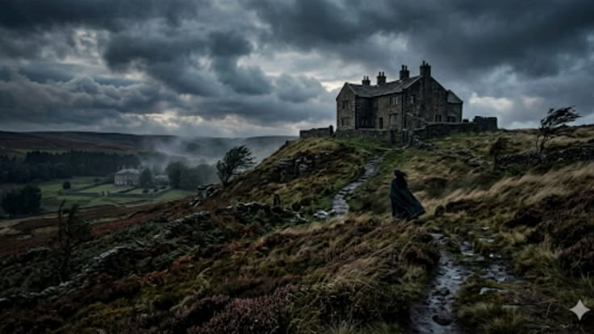

“O Morro dos Ventos Uivantes” de Emily Brontë, é uma obra intensa que retrata um amor complicado e cheio de conflitos. A história gira em torno de Heathcliff e Catherine, cujos sentimentos são marcados por paixão, sofrimento e vingança.
A narrativa apresenta personagens complexos e um ambiente sombrio, refletindo as emoções fortes presentes na história. Ao longo do tempo, as atitudes dos personagens geram consequências para várias gerações.
Por fim, é uma obra profunda e marcante, indicada para quem gosta de histórias dramáticas e cheias de emoção.